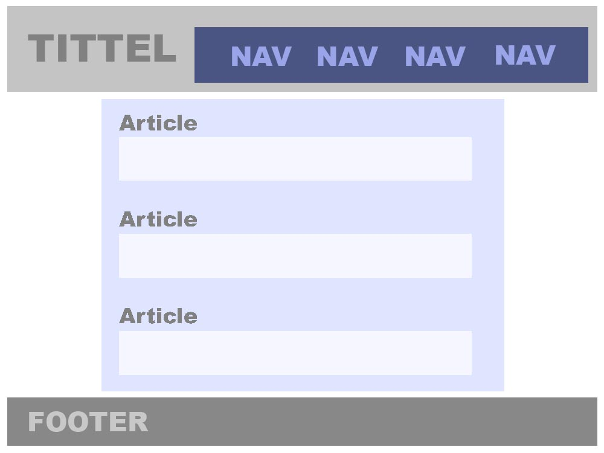

Om denne siden

Over er wireframes jeg har laget i photoshop. I forsiden endret jeg litt fra min siste skisse ettersom jeg ville henvise til artiklene og andre oppgaver som er gitt i obligen. En nav bar går igjen over alle sidene for å gjøre navigasjon enklest mulig. på bunnen av nettsiden kan man alltid finne 'om' siden der du leser nå.
| URL | Beskrivelse |
|---|---|
| Wikipedia | På wikipedia fant jeg mye generell nyttig informasjon om det å sette opp en wireframe. |
| Tutsplus | På tutsplus sin side om webdesign fant jeg mer profesjonelle beskrivelser om det å sette opp en wireframe og det å finne inspirasjon. |
| Smartdraw | Smartdraw har mange gode eksempler på ryddige wireframes. |